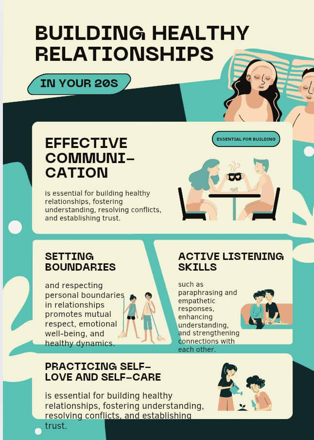
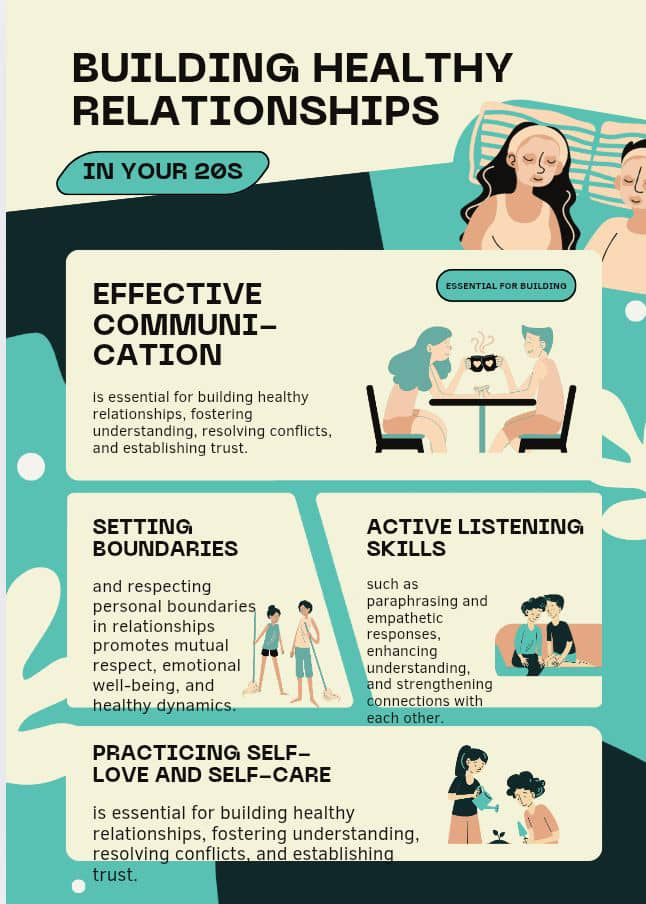

Understanding the Process: How to Know You're in Love
When one wants to know if they are in love, they have to take time and think about what changes when the person they feel love for is around. How do they behave, talk, and feel? Do they feel happy, safe, at home, loved, comfortable around that person? And how do they feel when the person isn't around—do they feel worried about the person or sad because the person isn't there? By analyzing these changes, one can determine whether or not they are truly in love.
"Love is knowing you're safe in their heart and feeling at home in their presence."
- Salome Moyo

Relationship Goals
Communication is key; always make time to listen and share openly with each other.
It's important for a couple to set goals in their relationship because everything that happens must have a purpose. If the relationship doesn't have goals, this is where confrontations arise here and there.
"Relationship goals are not about perfection, but about growing together through every challenge and joy."
- Queen Zulu
 

Trust and loyalty
*Trust & Loyalty* are the foundation of any strong relationship. Without them, everything else falls apart.
- Be Each Other’s Safe Space
In a world that never stops moving, where storms of stress, noise, and expectations hit from every angle, your relationship should be the one place that feels like peace. Be the person your partner can turn to without fear of judgment. Whether they’ve had a terrible day or are bursting with joy, be the calm in their chaos and the cheerleader in their wins. A strong bond isn’t just built through romance but through emotional safety. Listen more than you speak. Understand before you respond. Create a space where vulnerability isn’t just welcomed — it’s valued. The real goal isn’t perfection, it’s protection — of hearts, peace of mind, and each other’s emotional wellbeing. Because at the end of the day, love should feel like home.
Chastity
Chastity is a concept that often refers to the practice of abstaining from sexual activity, typically due to personal, religious, or cultural beliefs. It can mean different things to different people depending on their values and circumstances. For some, chastity is seen as a virtue, especially in certain religious or spiritual teachings, where it might be associated with purity, discipline, or devotion. Others may view it as a choice made for personal growth, health, or for maintaining focused relationships.
Aspects of Chastity
1. Physical Chastity
(i). Abstinence
The state of staying away from sexual intercourse. Abstinence is often misunderstood, but it can be a powerful tool for self-discovery and growth. By abstaining from sexual activity, individuals can focus on developing their emotional, mental, and spiritual selves. This can lead to a deeper understanding of oneself and one's values. Abstinence can also help individuals build self-discipline and self-respect. By making this choice, individuals can demonstrate to themselves that they are capable of making difficult choices and sticking to their values.
"Abstinence is power."
- Unknown
(ii). Self Awareness
Understanding one's own desires and values to make informed choices.
- Modesty: Dressing and behaving in a way that respects one's own and others' dignity.
- Purity: Maintaining a pure heart and mind, free from lustful thoughts and desires.
2. Emotional Chastity
Emotional chastity involves being honest and authentic in one's emotions and relationships, and maintaining healthy emotional boundaries.
- Mental Purity: Avoiding lustful thoughts and fantasies.
- Discernment: Being mindful of the media and influences one exposes oneself to.
- Focus on Virtue: Cultivating virtuous thoughts and desires.
4. Spiritual Chastity
Spiritual chastity involves being faithful to one's spiritual commitments and values, and cultivating a deep prayer life.
- Faithfulness: Being faithful to one's spiritual commitments and values.
- Prayerfulness: Cultivating a deep prayer life to guide one's thoughts and actions.
- Detachment: Detaching oneself from worldly desires and attachments.
Disappointment in Relationships
Disappointment in relationships can be a challenging and painful experience.
Causes of Disappointment in Relationships
Disappointment in relationships can arise from various sources, including:
- Unmet Expectations: When our expectations from our partner or the relationship are not met, it can lead to disappointment.
- Communication Breakdown: Poor communication or misunderstandings can cause disappointment and frustration.
- Trust Issues: Betrayal of trust or feelings of insecurity can lead to disappointment.
- Different Values or Goals: When partners have different values, goals, or priorities, it can cause disappointment and conflict.
Remember:
Healing isn't linear, and everyone's journey is different. Be patient with yourself as you navigate this process. Some days will feel like progress, others like setbacks—both are normal.
Practical Steps Forward
- Create healthy boundaries: This includes digital boundaries—block them if necessary. It's not childish; it's protecting your peace. Social media stalking only prolongs the pain.
- Focus on self-care: Establish routines that nurture your physical and mental health. Start small: walks, meditation, journaling, or whatever brings you peace.
- Rebuild your support system: Reconnect with friends and family. Don't isolate yourself—let people in who want to help.
- Explore new interests: Rediscover who you were before the relationship. Take that class you've been putting off, start that hobby you've been curious about.
- Practice mindfulness: Stay present rather than dwelling on the past or anxiously anticipating the future.
"Sometimes good things fall apart so better things can fall together."
- Marilyn Monroe
When to Seek Support

Get ideas from elders; don't isolate yourself from them. They're the ones who have knowledge about relationships. Consider seeking support when you:
- Feel stuck in your grief for an extended period
- Have difficulty maintaining daily routines
- Experience persistent feelings of hopelessness
- Find yourself unable to imagine a positive future
- Notice unhealthy coping mechanisms developing
"Asking for help isn't giving up. It's refusing to give up."
- Faith Musonda
Handling the Feelings
Of course, it's important to handle our sexual feelings. We can do a lot of activities so that you forget about the feeling which is overwhelming you. You can play sports, have fun with friends, engage in creative hobbies, or focus on personal goals and growth.
If They Come Back:
Ask yourself if the fundamental issues that caused the breakup have been resolved. Consider whether getting back together aligns with your current goals and what you've learned about yourself in the meantime.
"Not everyone who wanders back into your life is meant to stay."
- Racheal Malambo
Looking Forward
Moving on doesn't mean forgetting—it means learning to carry the experience with you in a way that doesn't hold you back. As you heal, you'll discover new strengths and capabilities you didn't know you had. Remember, someone's rejection isn't your life's direction—it's just a redirection.
"If you were born with the weakness to fall, you were born with the strength to rise."
- Rupi Kaur
Growth Mindset:
View this period as an opportunity for personal growth and self-discovery. The challenges you face today are building blocks for a stronger tomorrow. Your best chapters are still unwritten.